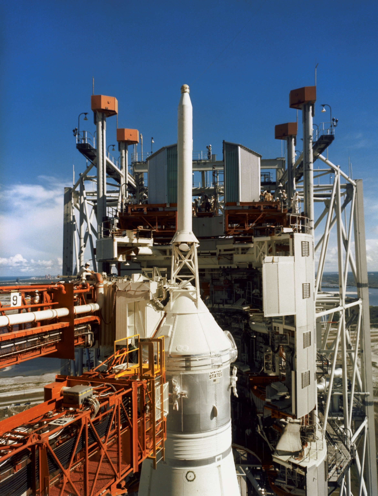

Sputnik 1 inaugura a Era Espacial
04 de outubro de 1957
A União Soviética lança o primeiro satélite artificial da história.
Ler maisInformações do mundo para você.

Imagem histórica — Fonte: NASA (Conteudo Adaptado)Estados Unidos e União Soviética disputaram a liderança espacial durante a Guerra Fria. Conheça os acontecimentos que marcaram essa competição histórica.
Ler matéria completa →04 de outubro de 1957
A União Soviética lança o primeiro satélite artificial da história.
Ler mais12 de abril de 1961
O cosmonauta soviético torna-se o primeiro ser humano no espaço.
Ler mais20 de julho de 1969
A missão Apollo 11 realiza o primeiro pouso tripulado na superfície lunar.
Ler mais